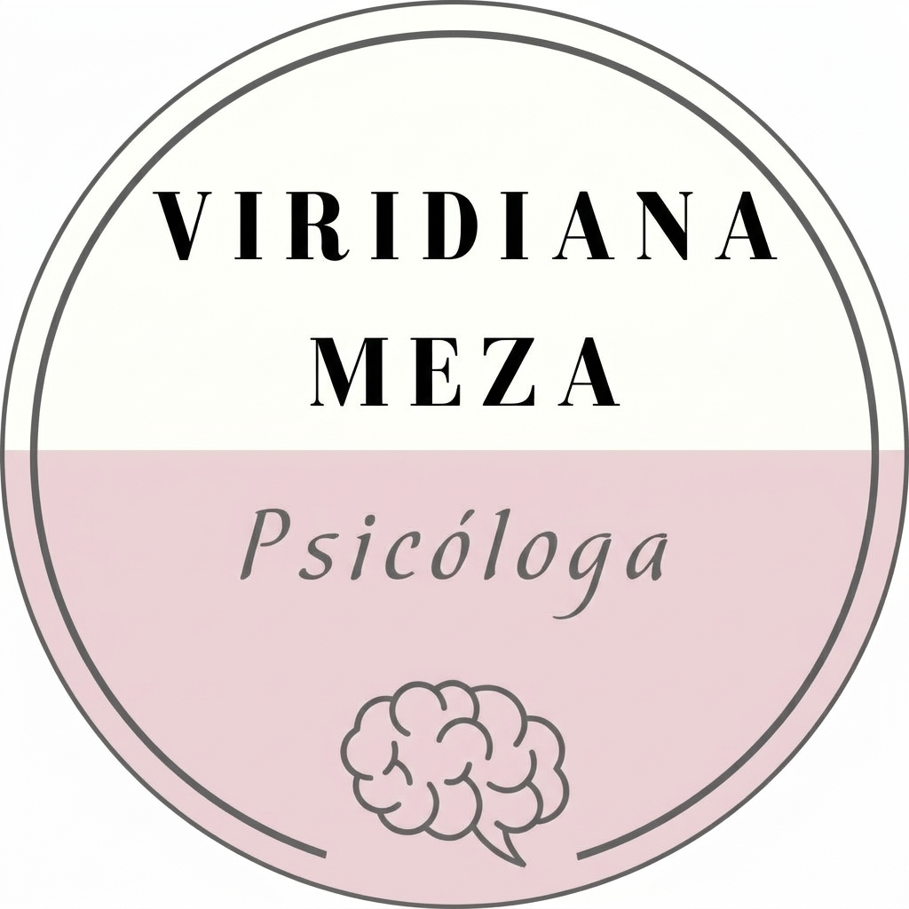

Acompañamiento humano desde la ciencia y la empatía. Terapia psicólogica en línea y presencial.

Soy Viridiana Estefanía Meza Hernández, psicóloga especializada en acompañamiento tanatológico y psicoterapéutico. Desde hace más de cuatro años acompaño a personas que atraviesan procesos de duelo, crisis personales, ansiedad, depresión o cambios significativos en su vida.
Mi enfoque integra herramientas de la Terapia Cognitivo-Conductual y la Terapia, permitiéndome ofrecer un espacio seguro, ético y profundamente humano. Mi objetivo es caminar contigo para que redescubras tus recursos internos y reconstruyas tu bienestar emocional con claridad y valentía.
Dirigido a: Jóvenes, adultos y adultos mayores
Duración: 50–60 minutos
Modalidad:
Un proceso terapéutico centrado en identificar patrones de pensamiento, comprender emociones y desarrollar estrategias de afrontamiento que te permitan recuperar equilibrio y bienestar.
Logra claridad sobre tus emociones y procesos actuales para cerrar ciclos, integrando nuevas conductas y estrategias de afrontamiento que te permitan vivir con mayor libertad, coherencia y resiliencia ante los desafíos diarios.
Inversión: En línea $450 - Presencial $550
Reconstruyendo el vínculo a través de la comunicación y el entendimiento.
Dirigido a:
Parejas en cualquier etapa de su relación que atraviesen crisis de comunicación, procesos de duelo compartido, dificultades en la resolución de conflictos, o que simplemente deseen fortalecer su conexión emocional y su proyecto de vida en común.
Duración: 75–90 minutos
(La terapia de pareja suele requerir un poco más de tiempo que la individual para permitir que ambas partes se expresen plenamente)
Modalidad:
Es un proceso de mediación y acompañamiento profesional donde se analizan las dinámicas de la relación. No se busca determinar quién tiene la razón, sino identificar los patrones de interacción que están causando malestar. Utilizamos herramientas para mejorar la escucha activa, establecer acuerdos saludables y sanar heridas del pasado.
Inversión: En línea $750 - Presencial $900
Creo firmemente que la salud mental es un proceso creativo y valiente de reconstrucción personal. Mi práctica se basa en:
Acompañamiento respetuoso de tu proceso único
Modelos terapéuticos científicamente respaldados
Entendimiento profundo de tu experiencia
Actualización continua y práctica responsable
Cada sesión es un espacio para explorar, comprender y transformar.
Acompañamiento tanatológico en procesos de duelo, rupturas y pérdidas significativas
Manejo de síntomas ansiosos, estrés crónico y depresión
Desarrollo de autoestima y comunicación asertiva
Establecimiento de límites saludables y gestión emocional
Atención a adolescentes, adultos y adultos mayores
Orientación en procesos de crianza consciente y respetuosa
Universidad IEXPRO (En curso)
Universidad de Negocios ISEC
Instituto Latinoamericano de Estudios de Posgrado (ILEP)
TanatologíaUniversidad de Chiapas UDECH / Instituto de Innovación Educativa
Terapia Cognitivo-ConductualInstituto Latinoamericano de Estudios de Posgrado (ILEP)
Más de 7 años de práctica profesional, de los cuales, 4 han sido en clínica privada con enfoque en:
Si sientes que tus emociones te sobrepasan, atraviesas un duelo difícil o simplemente deseas conocerte mejor, la terapia es un espacio seguro para ti. No necesitas estar en una "crisis extrema" para empezar.
Cada proceso es único. Dependerá de tus objetivos y necesidades, pero lo revisaremos juntos en las primeras sesiones para que tengas claridad.
Absolutamente. Todo lo que hablemos está protegido por el secreto profesional y el código ético del psicólogo.
Es común que uno de los dos tenga dudas. Podemos iniciar con una sesión de orientación para explicar la dinámica y bajar tensiones. Sin embargo, para el trabajo de pareja, la disposición de ambos es fundamental.
No. Muchas parejas asisten para mejorar su comunicación, prepararse para un cambio importante (como vivir juntos o tener hijos) o simplemente fortalecer su vínculo.
Estoy aquí para acompañarte en tu proceso. Contáctame para agendar tu primera sesión.
Lunes a Viernes: 9:00 AM - 8:00 PM
Sábados: 9:00 AM - 2:00 PM